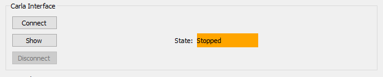
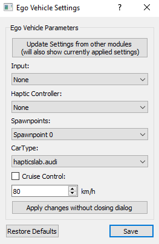

Module: CARLA Interface
The CARLA interface module is one of the core modules, it establishes the connection between JOAN and CARLA. This module is where you can spawn new vehicles (either human-driven or NPC) and connect them to control methods (human inputs or NPC controllers). This is also the module that retrieves data from Carla. This data is shared on the modules News channel and can therefore be used in other modules (e.g., current velocity in a controller module), or it can be stored in a CSV file in the data recorder. Finally, this module allows you to create scenarios. A scenario is an event triggered by a condition in the Carla environment being met. For example, you can use a scenario that starts the movement of an NPC vehicle if the ego vehicle passes a specific point in the scene.
An example screenshot of the module dialog layout in the READY state is shown below:

In this section, we'll cover 3 main things namely: using the module, creating your own agent to add, and creating a scenario.
Using the Module
Carla Connection
Whenever you have included CarlaInterface in your modules, JOAN will try to connect to CARLA at startup. If this process fails you will see the following dialog:

This could happen if you did not start up CARLA in Unreal yet or there are some other connection issues. If the connection failed at startup this is not a problem, via the main JOAN window you can still connect to CARLA by pressing the connect button, shown below:

If JOAN is already connected the connect button will not be available but the disconnect button is enabled. One last thing remains to be said about the CARLA
connection. Because we use multiprocessing, we need to connect to CARLA again when the module process is created (this is done after
clicking get ready). This makes sure we have access to the CARLA pythonapi function within this process. There is however a big note to this:
Important
Whenever you are already in the READY state, and you stop CARLA from the unreal side, this will lead to erratic behavior in JOAN. So never stop your experiments via the quit button in Unreal. Ideally, you use the 'play' button in unreal once before starting up JOAN and stop it again after you quit JOAN.
Adding Agents
As with most modules, it is only possible to add, remove or change settings in the STOPPED state:

So whenever pressing the add agent button a dialog will pop-up prompting you to choose what sort of agent you'd like to add. In the default JOAN only 1 agent
is available, namely an Ego Vehicle.

Clicking OK will open the settings of this particular Ego Vehicle.

As can be seen in the image above we need to set some settings before we can do anything with the ego vehicle. The options for input/and haptic
controller will only be available if these have been added in that particular module. If the other options are not showing but you did add them in the
appropriate module, try and click the update button at the top, this will update the group boxes. Spawnpoints and CarType are directly communicated from
CARLA, therefore if you have no connection to CARLA these will be empty (another hint that you should connect to CARLA first). If you add 2 vehicles and they
have the same spawn point a message will pop up saying that there is a spawn point conflict and the spawn point will reset to None:

Note
If you choose None for spawn point it will just not spawn any car, same goes for the CarType.
The last thing you can choose from is the cruise control checkbox and the desired speed. Please note that this will use a PD controller on the throttle and brake and does not set the velocity instantly.
selecting a scenario
The drop-down box in the lowest part of the Carla interface dialog lets you select a scenario. Scenarios are meant to contain simple rule-based triggers to
trigger events in the world under specific conditions. An example could be to spawn another vehicle on a cross-section when the ego-vehicle approaches this
cross-section. One example scenario is included in JOAN: the print scenario. This scenario will print a message if a keyboard is used as a hardware input. It
serves no purpose other than showcasing what can be done with a scenario. To learn how to add your own scenarios to JOAN, please read
the Add your own scenario
section below.
Adding Your Own Agents
This section will describe, how you can go about implementing your own agent, so adding an agent other than Ego Vehicle. There are some things you need to
keep in mind while doing this so therefore this section will go a bit more into detail. The steps below do not have to be followed in this particular order,
however, it might be easy to just follow them in this order anyway.
Step 1. Getting informed
Check out the file
.../modules/carlainterface/carlainterface_agenttypes.py
This will be your main reference as to which files you'll need to create and where. The carlainterface_agenttypes.py file contains an Enum class, which points
to all the locations and needed files. You'll notice that the EGO_VEHICLE has the following 7 elements to it:
processclasssettings dialogclasssettingsclassshared_variablesobjectsettings_ui_fileagent_tab_ui_file__str__representation
Step 2. Adding/copying the classes.
We would highly like to recommend by first creating your new agent_type file:
.../modules/carlainterface/carlainterface_agentclasses/<YOUR_AGENT_TYPE_FILE>.py
Now that you have this file you need to make the same sort of structure as the ego_vehicle.py file. Of course, the exact implementation depends very heavily on
what you desire this agent to do or be. However, the file should contain the following classes:
<YOUR_AGENT_TYPE_NAME>SettingsDialog<YOUR_AGENT_TYPE_NAME>Process<YOUR_AGENT_TYPE_NAME>Settings
If you are a well-versed python programmer you can just look at the ego_vehicle implementation and make your own version of what you need. However, if you are
not, it might be easier to (for now) copy these classes from the ego_vehicle.py file, make it error-free, and then start making your changes. Once you have these classes implemented, you have 3/7 elements you need as mentioned earlier.
Step 3. Adding/copying the ui files.
SettingsDialog ui file
This step might be a bit difficult. We would recommend using some sort of UI generating program to create your dialogs (ui files). We
used QtDesigner for JOAN. Just to begin it’s a good idea to find the ego_vehicle ui
files, and open them in QtDesigner (click for enlargement):

In QtDesigner we can add group boxes, buttons, labels, etc. Anything you need to make a proper settings dialog. In the top-right corner, you must name your objects
sensible names so you can easily distinguish what is what. For example, if you would like to add a combo box that decides the color of the car you could add a
Combobox and name it combobox_carcolor.
If we have also included carcolor as a setting we can then in the <YOUR_AGENT_TYPE_NAME>SettingsDialog add something like:
self.settings.selected_carcolor = self.combo_carcolor.currentText()
Rather than chew everything out here, we recommend you take a look at the inner workings of this in the ego_vehicle.py file!
Agent Tab ui file
Luckily this one is easier, assuming that you only want to have the buttons settings and remove_agent you can just use the standard:
.../modules/carlainterface/carlainterface_agentclasses/ui/agent_tab.ui
However, if you want more functionality in this tab you can add your only designed tab of course!
Note
For reference, this has also been done for the module_card.ui and module_card_carlainterface.ui, so if you're interested please take a look at .../core/hq
Step 4. Adding/copying shared variables object
The shared variables object should contain all the variables you'd like to do something with from the rest of JOAN, so if you want to record or plot anything or just do anything with the data at all outside of its own process it should be inside the shared variables class.
As you might have noticed this object is not contained within your new <YOUR_AGENT_TYPE_FILE>.py1, so it should come from somewhere else, namely:
`.../modules/carlainterface/carlainterface_sharedvariables.py`
You should add a class containing your desired variables <YOUR_AGENT_TYPE_NAME>SharedVariables(SharedVariables) here.
Step 5. Linking it all together from the carlainterface_agenttypes.py enum
Now that you have all the needed files it’s now a matter of adding them to the enum!
Important
Make sure you link to the correct files in the enum, take the Ego Vehicle as a reference
Step 6. Loading from dict update
If you want to load settings from a JSON file for your freshly new agent there is one thing you should still do: In the following file you should add the same lines but adjusted them for your new vehicle:
.../carlainterface/carlainterface_settings.py
In the function load_from_dict you will need to add:
for identifier, settings_dict in module_settings_to_load['agents'].items():
if str(AgentTypes.<YOUR_AGENT>) in identifier:
<YOUR_AGENT>_settings = AgentTypes.<YOUR_AGENT>.settings()
<YOUR_AGENT>_settings.set_from_loaded_dict(settings_dict)
self.agents.update({identifier: <YOUR_AGENT>_settings})
Step 7. This guide was not useful at all I tried copying everything and it does not work!? What do I do?!
You likely forgot a crucial part, you have to be very meticulous! The error messages you get in the terminal should help you underway as to where things went wrong!
Add your own scenario
To add your scenario to JOAN, the only thing you have to do is create a scenario class that inherits from the Scenario abstract base class, and place it
in the module/carlainterface/scenarios/ folder. All scenario classes in this folder are automatically detected by JOAN and can be selected from the Carla
interface dialog the next time you start JOAN.
Every scenario needs two components, a unique name to identify the scenario implemented as a property, and a do_function. The do_function will be called
automatically on every timestamp, in this function, you can check conditions and execute actions. Please note that scenarios are implemented in the same loop as
the communications with Carla, so scenarios are not meant for heavy calculations like calculating control input. A scenario should on perform simple checks and
trigger events. These triggers can be implemented as pipes, queues, or signals to other modules where the heavy load is covered to make sure the Carla interface is
not overburdened.
The print scenario in the scenarios folder serves as an example of how to implement your scenario. Please have a look at how it is implemented to get
started with your implementation.
CARLA time step
CARLA's time step is fixed to 1. / 60. seconds (so 60Hz) when you run JOAN. If you'd like to change the fixed time step, in carlainterface.settings.py change
self.fixed_time_step = 1. / 60. # set to None if variable time stepself.fixed_time_step to None.
Check whether CARLA indeed runs at approximately the fixed time step by displaying the FPS counter in CarlaUE4. You can check the box in the dropdown menu in the viewport (top-left, arrow pointing down, only visible when CARLA is not running).